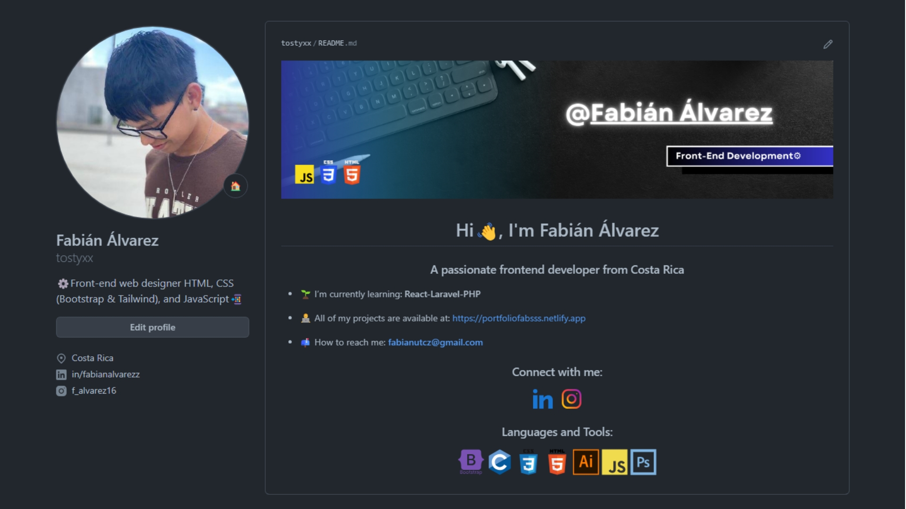

Ejemplo de Readme:
¡Saludos! En el mundo actual, ser un programador exitoso va más allá de tener habilidades técnicas; también implica destacar tu trabajo y proyectos en plataformas relevantes como GitHub. El perfil de GitHub se ha convertido en la principal carta de presentación para muchos desarrolladores, ya que muestra de manera tangible sus logros, proyectos y colaboraciones.
-Sin embargo, para destacar entre la multitud, es fundamental presentar tu perfil de manera atractiva y profesional. Es por ello que hoy te traigo una fantástica herramienta que te ayudará a personalizar tu README de GitHub de forma rápida y sencilla.
Te presento el "Generador de README para Perfiles de GitHub" desarrollado por Rahul Jain. Con esta herramienta en línea, puedes crear un README único y visualmente atractivo desde cero. Puedes acceder a la herramienta en este enlace: Generador de README para Perfiles de GitHub.
-El Generador de README para Perfiles de GitHub ofrece una amplia variedad de plantillas y estilos prediseñados que puedes personalizar según tus preferencias y necesidades. Además, te permite incluir información relevante sobre ti, tu experiencia, habilidades destacadas y tus proyectos más significativos.
¡Éxito en tus proyectos y que tu perfil de GitHub brille como nunca antes!